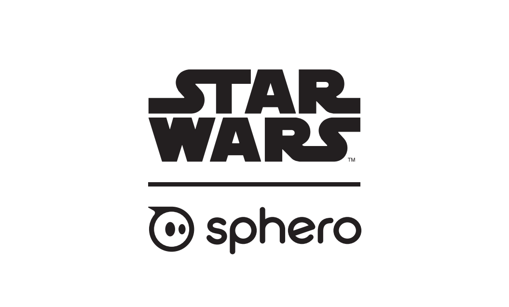

Small Is Going Big: Go On Microcontrollers - FOSDEM 2019
Ron Evans - @deadprogram
Ron Evans (@deadprogram)
hybridgroup.com
Clients

Open Source Projects
gobot.io

gocv.io
TinyGo
tinygo.org
What is TinyGo?
Languages for Embedded
C
C++
MicroPython
JerryScript/Espruino/Other JS Things
Rust
golang.org
But I Thought Go Was Too Big?
"Hello, world" in Go
package main
func main() {
println("Hello, world")
}
"Hello, world" compiled with Go 1.11.2
$ go version
go version go1.11.2 linux/amd64
$ go run ./helloworld/main.go
Hello, world
$ go build -o helloworldgo ./helloworld/
$ ls -l helloworldgo
-rwxrwxr-x 1 ron ron 1072001 ene 30 19:26 helloworldgo
"Hello, world" compiled with TinyGo
$ tinygo run examples/helloworld
Hello, world
$ tinygo build -o helloworldgo examples/helloworld
$ ls -l helloworldgo
-rwxrwxr-x 1 ron ron 10248 ene 30 19:31 helloworldgo
"Hello, world" binary sizes
Go 1.11.2
File size: 1072001
TinyGo
File size: 10248
How Can You Do That?
Let's just clear one thing up right away
TinyGo is not the same thing as normal Go
TinyGo does not support the entire Go language...yet
TinyGo does not support the entire Go standard library...yet
But TinyGo does have a lot of support already
And TinyGo can already be very useful for small places
WebAssembly
Command-line tools
Microcontrollers
How TinyGo Works
Go tooling --> TinyGo --> LLVM

TinyGo architecture
How to get code onto a Microcontroller
Build new code
Microcontroller bootloader
Flash new code
Execute the current code
Every MCU has different compilers
Every MCU has different bootloaders
Every MCU has different flashing tools
How to get TinyGo code onto a Microcontroller
tinygo build
tinygo flash
"Hello, World" of Things
Digispark + LED
Digispark
Atmel ATTiny85
8-bit processor
16 Mhz
8K Flash
package main
import (
"machine"
"time"
)
func main() {
led := machine.GPIO{machine.LED}
led.Configure(machine.GPIOConfig{Mode: machine.GPIO_OUTPUT})
for {
led.Low()
time.Sleep(time.Millisecond * 500)
led.High()
time.Sleep(time.Millisecond * 500)
}
}
Demo
GPIO Input & Output
Arduino Uno + LED + Button
Arduino Uno
Atmel ATMega328P
8-bit processor
20 Mhz
32K Flash
// code here...
Demo
Color Lamp
Arduino Uno + RGB LED + Button + Rotary Dial
Pulse Width Modulation (PWM)
Analog to Digital Converter (ADC)
package main
import (
"machine"
"time"
)
const (
buttonPin = 2
redPin = 3
greenPin = 5
bluePin = 6
red = 0
green = 1
blue = 2
)
func main() {
machine.InitADC()
machine.InitPWM()
button := machine.GPIO{buttonPin}
button.Configure(machine.GPIOConfig{Mode: machine.GPIO_INPUT})
dial := machine.ADC{machine.ADC0}
dial.Configure()
redLED := machine.PWM{redPin}
redLED.Configure()
greenLED := machine.PWM{greenPin}
greenLED.Configure()
blueLED := machine.PWM{bluePin}
blueLED.Configure()
selectedColor := red
colors := []uint16{0, 0, 0}
for {
// If we pushed the button, switch active color.
if !button.Get() {
if selectedColor == blue {
selectedColor = red
} else {
selectedColor++
}
}
// Change the intensity for the currently selected color based on the dial setting.
colors[selectedColor] = (dial.Get())
// Update the RGB LED.
redLED.Set(colors[red])
greenLED.Set(colors[green])
blueLED.Set(colors[blue])
time.Sleep(time.Millisecond * 100)
}
}
Demo
And then came the 32-bit revolution
ARM
After that, Microcontrollers became a lot more powerful
Cursor game
BBC:Microbit + LED array + Buttons
BBC: Microbit
Nordic Semiconductor nrf51
ARM Cortex M0
32-bit processor
16 Mhz
256K Flash
// code here...
Demo
Gopherbot
BBC:Microbit + APA102 LED array + Buttons + LED
Serial Peripheral Interface (SPI)
APA102 LED
// code here...
Demo
Choose Your Own Hardware Adventure
Digispark
Adafruit Circuit Playground Express
ESP8266 Wifi Adaptor
Tweet using #tinygo #fosdem about why you should win
Internet of Things
Internet Protocol (IP)
Go standard library
net?
not yet
For now only a subset of interfaces are compatible
ESP8266
ESPHUB
Adafruit ItsyBitsy M0 + ESP8266 WiFi Module + LED
Microchip SAMD21
ARM Cortex M0
32-bit processor
48 Mhz
256K Flash
Universal Asyncronous Receiver/Transmiter (UART)
AT Commands
// code here...
Demo
Flight Controller
Nordic Semiconductor PCA10040 + Analog Joystick + LED + UART
Nordic Semiconductor nrf52
ARM Cortex M4
32-bit processor
64 Mhz
512K Flash
Serial Peripheral Interface (SPI)
APA102 LED
// code here...
Demo
Full Application: Flight Control
Flight System
Flight Controller + CV Ground System + Tello Drone
Tello
Gobot
GoCV
Diagram
// code here...
Demo
One last thought...
Humanity is acquiring all the right technology for all the wrong reasons.
R. Buckminster "Bucky" Fuller


"Abandoned Buran shuttle" - Ralph Mirebs
https://ralphmirebs.livejournal.com/219949.html

"Stateville Correctional Center" - Doug DuBois & Jim Goldberg
http://www.dougdubois.com/
http://www.magnumphotos.com/jimgoldberg

"Altitude determines attitude" - Robert Pruitt
http://robertpruittartist.tumblr.com